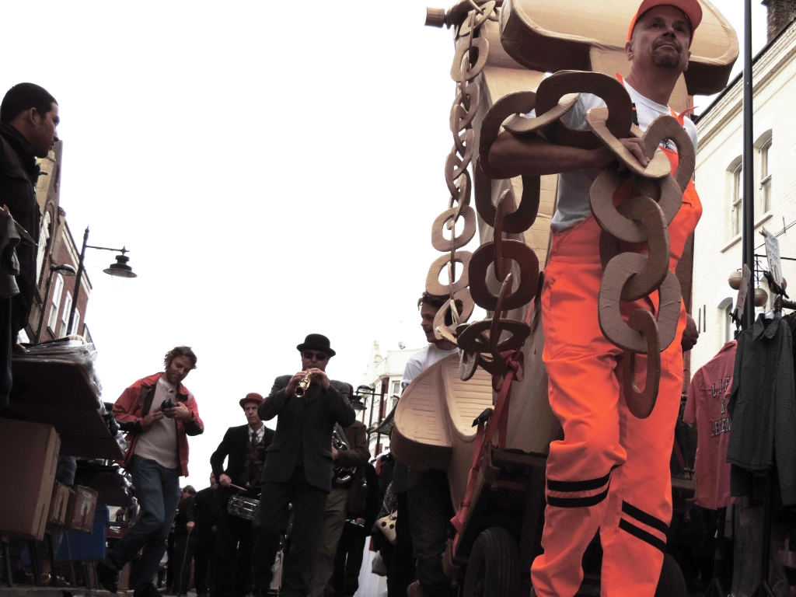
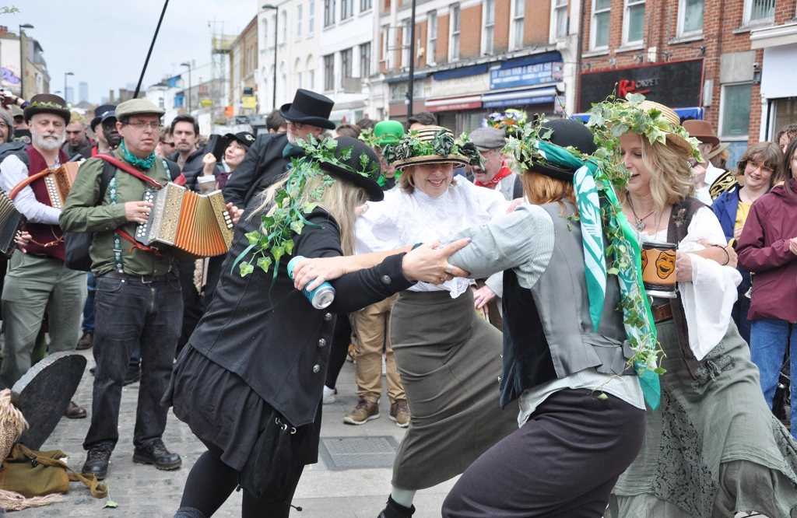
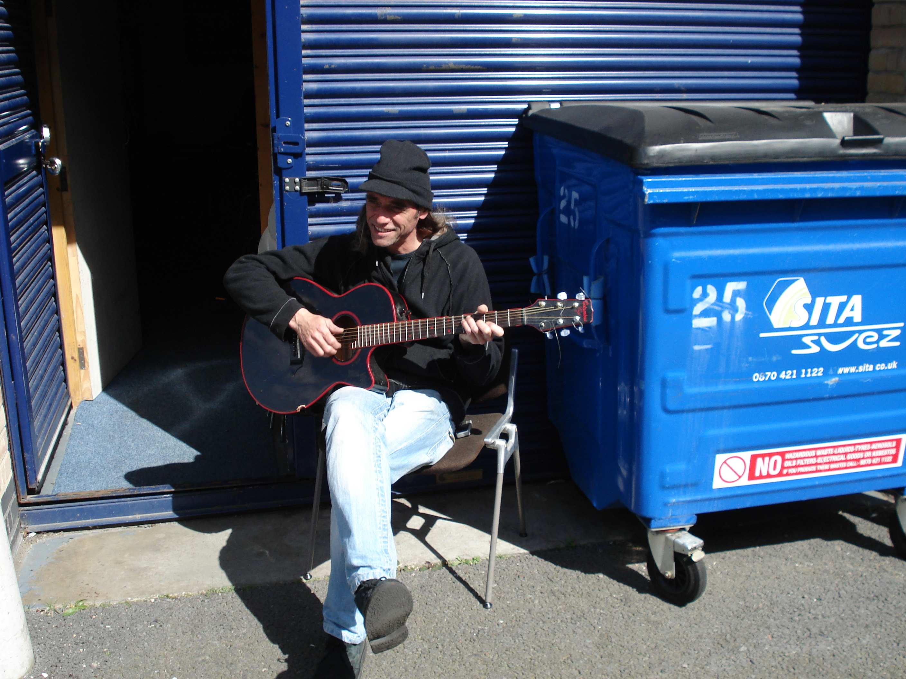

About
Silo SE8 is a collective of musicians and performers that has been around the Deptford area for over 30 years. Currently residing in a railway arch in Deptford.

Deptford Anchor Procession 2013 - Deptford is Forever

Jack in the green, Deptford - Anita Strasser

Elwell sitting outside Silo - Chris Proud